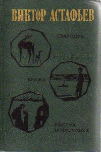
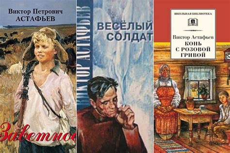

Литература
Заниматься литературой Виктор Астафьев стал уже после войны, когда почувствовал потребность в сочинительстве. Его первая книга сборник рассказов «До будущей весны» вышла в 1953году. Следом выходят еще книги рассказы для детей «Огоньки», «Васюткино озеро», «Дядя Кузя, лиса, кот» и т. д. В 50-е годы произведениями Астафьева зачитывалась вся страна
 
В те годы он выпустил повести «Перевал», «Стародуб», «Звездопад». За время своей литературной деятельности, Астафьев написал и издал множество произведений «Царь Рыба», «Последний поклон» и многие другие произведения, которые прославили писателя. В частности в творчестве Астафьева были и произведения о войне: «Так хочется жить», «Пастух и пастушка», «Весёлый солдат» и «Прокляты и убиты», работа над которой была очень тяжелой. Виктор Петрович Астафьев один из немногих писателей, кого ещё при жизни называли классиком